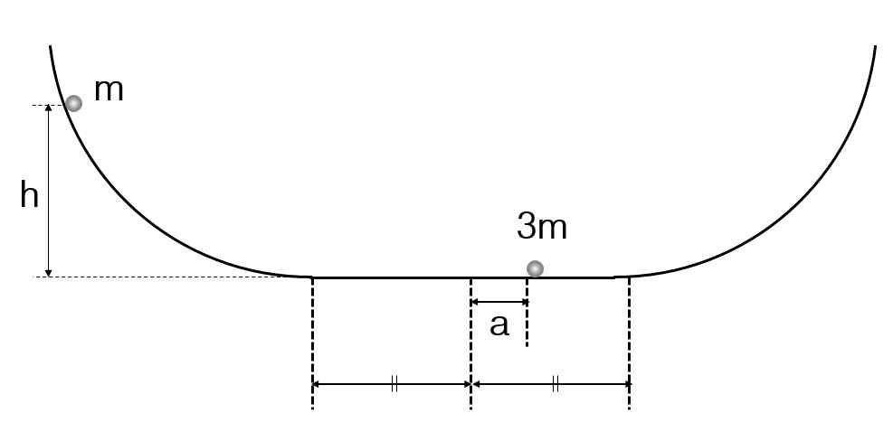

문제 4
그림과 같이 지면에서 높이 h에 정지해 있던 질량 m인 물체가 마찰이 없는 완만한 곡면을 따라 미끄러져 내려온 후 편평한 평면에서 정지해 있던 질량 3m인 물체와 충돌한다. (두 물체는 질량은 있지만 크기는 없는 질점으로 가정하며, 3m인 물체는 아래 그림과 같이 가운데에서 a만큼 오른쪽으로 떨어져 있다). 충돌 후 각 물체는 양쪽 곡면으로 이동할 수 있으며, 양쪽 곡면의 높이는 충분히 높아서 물체는 다시 돌아오고, 계속해서 충돌이 일어난다. 모든 충돌은 완전탄성충돌이라고 가정하며, 공기의 저항은 무시하고, 중력가속도는 g이다.
(1) 첫 번째 충돌 직후, 두 물체의 속도를 각각 구하시오.
(2) 두 번째 충돌이 일어날 때, 3m인 물체의 위치를 구하시오.
(3) 두 번째 충돌 직후, 두 물체의 속도를 각각 구하시오.
(4) 이후 충돌 양상을 설명하시오. 충돌 위치는 어떻게 변하는가?
(5) 질량 m과 3m인 물체가 곡면에서 도달할 수 있는 최대 높이를 구하시오.
